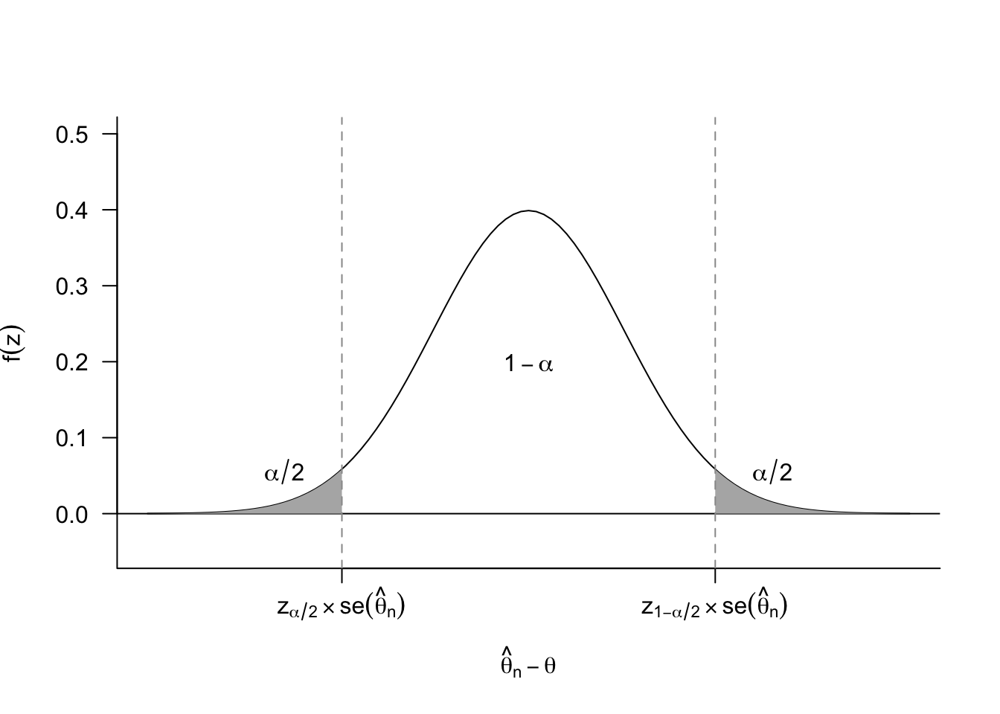
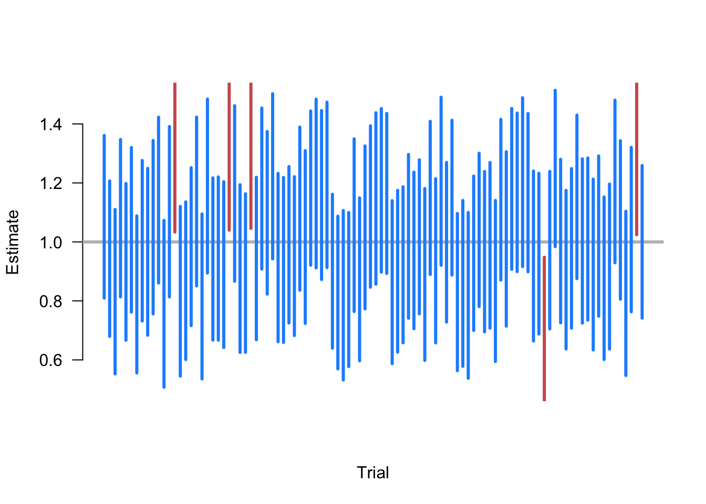
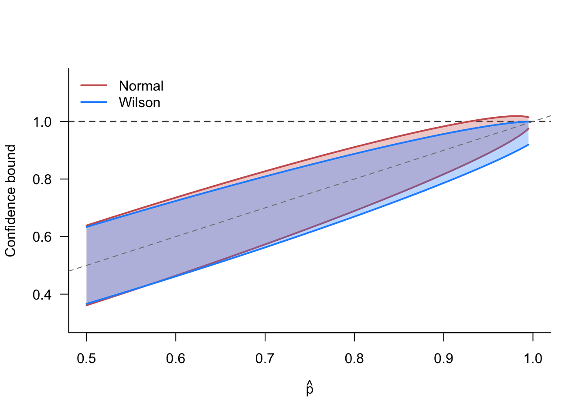

5 Confidence intervals
You have run your experiment and presented your audience with your single best guess about the treatment effect with the difference in sample means. You may have also presented the estimated standard error of this estimate to give readers a sense of how variable the estimate is. You might have even done a hypothesis test against the null of no treatment effect. But none of these approaches answer a fairly compelling question: what range of values of the treatment effect are consistent with the data we observe and some reasonable values of chance estimation errors?
A point estimate typically has 0 probability of being the exact true value, but intuitively we hope that the true value is close to this estimate. Confidence intervals make this kind of intuition more formal by estimating a range of values that will contain the true value in a fixed percentage of random samples.
We begin with the basic definition of a confidence interval.
Definition 5.1 A \(1-\alpha\) confidence interval for a real-valued parameter \(\theta\) is a pair of statistics \(L= L(X_1, \ldots, X_n)\) and \(U = U(X_1, \ldots, X_n)\) such that \(L < U\) for all values of the sample and such that \[ \P(L \leq \theta \leq U \mid \theta) \geq 1-\alpha, \quad \forall \theta \in \Theta. \]
We say that a \(1-\alpha\) confidence interval covers (contains, captures, traps, etc) the true value at least \(100(1-\alpha)\%\) of the time, and we refer to \(1-\alpha\) as the coverage probability or simply coverage. Common confidence intervals include 95% (\(\alpha = 0.05\)) and 90% (\(\alpha = 0.1\)).
So a confidence interval is a random interval that has a particular guarantee about how often it will contain the true value. It’s important to remember what is random and what is fixed in this setup. The interval varies from sample to sample but the true value of the parameter stays fixed, and the coverage is how often we should expect the interval to contain that true value. The “repeating my sample over and over again” analogy can break down very quickly, so it’s sometimes helpful to interpret as giving guarantees across confidence intervals across different experiments. In particular, suppose that a journal publishes 100 quantitative articles per year and each produces a single 95% confidence interval for their quantity of interest. Then, if the confidence intervals are valid, then we should expect 5 of those confidence intervals to not contain their true quantity of interest.
Warning
Let’s say you calculate a 95% confidence interval and it’s \([0.1, 0.4]\). It’s tempting to make a probability statement like \(\P(0.1 \leq \theta \leq 0.4 \mid \theta) = 0.95\) or that there’s a 95% chance that the true parameter is in \([0.1, 0.4]\). But looking at the probability statement, everything on left-hand side of the conditioning bar is fixed, so the probability either has to be 0 (\(\theta\) is outside the interval) or 1 (\(\theta\) is in the interval). The coverage probability of a confidence interval refers to its status as a pair of random variables, \((L, U)\), not any particular realization of those variables like \((0.1, 0.4)\). As an analogy, consider if we calculated the sample mean as \(0.25\) and then tried to say that \(0.25\) is unbiased for the population mean. This doesn’t make sense because unbiasedness refers to how the sample mean varies from sample to sample.
Note
Bayesian inference—which treats the data as fixed and the parameters as random—can make probabilistic statements about the true mean being in the observed interval, but this approach also usually requires a parametric model and a probability distribution for the true mean before we see the data (called the prior distribution). Confusingly or thankfully (depending on how you view it), these Bayesian credible intervals (as they are called) are often very similar to the corresponding confidence intervals, especially in large samples (see the Bernstein-von Mises Theorem for more information on this). This convergence of Bayesian and frequentist interval estimators leads to a diversity of views on how important the exact interpretation of confidence intervals actually is.
In most cases, we will not be able to derive exact confidence intervals, but rather confidence intervals that are asymptotically valid, which means that if we write the interval as a function of the sample size, \((L_n, U_n)\) they would have asymptotic coverage \[ \lim_{n\to\infty} \P(L_n \leq \theta \leq U_n) \geq 1-\alpha \quad\forall\theta\in\Theta. \]
With the exception of certain parametric models (such as the normal model discussed below), we will often have to settle for establishing asymptotic coverage, since we usually rely on large sample approximations based on the central limit theorem.
5.1 Deriving confidence intervals
A thought experiment can give the basic intuition for almost all approaches to deriving confidence intervals. We can start our confidence interval journey by focusing on one side. In particular, we will derive a probabilistic lower bound—that is, a bound that will lower than the true quantity of interest with a fixed probability.
Suppose we’ve estimated support for increasing legal immigration to be \(\widehat{\theta}_n = 0.56\) from a sample of size \(n = 400\). Recall that we can think of all estimators as the true value plus some estimation error, \[ \widehat{\theta}_n = \theta + \text{estimation error}. \] We already know the estimate, so if we knew the estimation error, then we could back out the true value of the parameter, \(\theta\). Obviously, we don’t know the estimation error, but in many cases we know (or can approximate) the distribution of the estimation error. For example, for asymptotically normal estimators, we know that, in large samples, \[ \widehat{\theta}_n - \theta \sim N(0, \se[\widehat{\theta}_n]^2). \] In the case of the proportion support for increasing legal immigration, we know that \(\se[\widehat{\theta}_n] = \sqrt{\theta(1 - \theta)/n}\) given that the outcome is binary.
From this insight, we can engage our thought experiment: what if we had an extremely large positive estimation error that was, say, larger than 97.5% of estimation errors? Intuitively, if we have a large estimator error, then the true value of \(\theta\) should be much smaller than our estimate and could provide a probabilistic lower bound for \(\theta\).
Recall that \(z_a\) is the \(a\)-th quantile of the standard normal, which implies that the 97.5% quantile of the chance error distribution would be \(z_{0.975}\, \se[\widehat{\theta}_n]\), where \(z_{0.975} \approx 1.96\). Thus, the upper bound on the estimation error would be \[ \widehat{\theta}_n - \theta = 1.96\, \se[\widehat{\theta}_n] \] from which we can back out the implied true value of the parameter, \[ L = \widehat{\theta}_n - 1.96\, \se[\widehat{\theta}_n]. \] Here, \(L\) is a probabilistic or random lower bound because the value \(\widehat{\theta}_n\) is random. Sometimes it will cover the true value (\(L \leq \theta\)) and sometimes it will not cover the true value (\(L > \theta\)). We controlled how often it covers the true value. Because 2.5% of estimation errors will be larger than \(1.96 \, \se[\widehat{\theta}_n]\), then \(L\) will be a valid lower bound (cover the true value) in 97.5% of samples, or \(\P(L \leq \theta) \approx 0.975\) and not cover the true value 2.5% of samples.
In the immigration sample, we have \[ L = 0.56 - 1.96 \, \sqrt{0.56(1 - 0.56)/400} \approx 0.56 - 0.048 = 0.511, \] where we have used the usual plugin estimator for the standard error. A lower bound of \(0.511\) tells us that values below that are only compatible with very large and rare chance errors.
What if a 2.5% chance of this bound being wrong is too high? We could instead consider what the truth would be for a positive chance error that is larger than 99% of chance errors, which would be \(z_{0.99} \, \se[\widehat{\theta}_n] \approx 2.32 \, \se[\widehat{\theta}_n]\). In the immigration example, we have \[ L = 0.56 - 2.32 \, \sqrt{0.56(1 - 0.56)/400} \approx 0.502, \] which is a lower lower bound. This reflects a fundamental tradeoff: our probabilistic bounds get worse (rule out a smaller region of possible values) as we base them off of more extreme chance errors.
A similar approach can help to derive an upper bound. We imagine a very large negative estimation error that implies a probabilistic upper bound on \(\theta\). A very large negative estimation error could be \[ \widehat{\theta}_n - \theta = -1.96 \, \se[\widehat{\theta}_n] \] which is smaller than 2.5% of estimation errors. This result would imply a probabilistic upper bound of \[ U = \widehat{\theta}_n + 1.96 \, \se[\widehat{\theta}_n], \] which will not cover the true value 2.5% of the time, \(\P(U < \theta) \approx 0.025\).
We have derived a probabilistic upper bound and lower bound separately, but we can easily combine them into one interval. Intuitively, if our upper bound misses the true value in 2.5% of samples and the lower bound misses the true value in 2.5% of samples, then the interval \([L, U]\) should not cover the true value 5% of the time. Formally, we have: \[ \P(L \leq \theta \leq U) = 1 - \left(\P(L > \theta) + \P(U < \theta)\right) = 1 - (0.025 + 0.025) = 0.95. \]
More generally, for a \(100(1-\alpha)\)% confidence interval, we need to determine the range of chance errors that puts \(\alpha/2\) in each of the tails.
Thus, for the \(100(1-\alpha)\)% confidence interval, we can derive the implied lower bound as \[ L = \widehat{\theta}_n - z_{1-\alpha/2}\, \se[\widehat{\theta}_n], \] and the upper bound as \[ U = \widehat{\theta}_n - z_{\alpha/2}\, \se[\widehat{\theta}_n]. \] It’s slightly unintuitive that we subtract the chance imbalances in both of these expressions, but recall that \(z_{\alpha/2}\,\se[\widehat{\theta}_n]\) will be a negative number (it is, after all, a large negative chance error). In particular, for asymptotically normal estimators, we know that the chance error distribution is symmetric so that \(z_{\alpha/2} = -z_{1-\alpha/2}\), leading to the usual confidence interval formula, \[ [L, U] = \left[\widehat{\theta}_n - z_{1-\alpha/2}\, \widehat{\se}[\widehat{\theta}_n],\; \widehat{\theta}_n + z_{1-\alpha/2}\, \widehat{\se}[\widehat{\theta}_n]\right], \] where we have substituted the estimated standard error for the true standard error. By Slutsky’s theorem (Theorem 3.9), this substitution does not affect the asymptotic coverage of the interval. This is sometimes shortened to \(\widehat{\theta}_n \pm z_{1-\alpha/2}\, \widehat{\se}[\widehat{\theta}_{n}]\).
Example 5.1 (Confidence interval for the sample mean) Consider the sample mean of iid random variables, \(X_1, \ldots, X_n\) where \(\E[X_i] = \mu\) and \(\V[X_i] = \sigma^2\). Recall that the central limit theorem shows that the sample mean will roughly be normally distributed \(\Xbar_n \sim N(\mu, \sigma^2/n)\), which implies we can estimate its standard error as \[ \widehat{\se}[\Xbar] = \frac{s_n}{\sqrt{n}}, \] where \(s^2_n = (n-1)^{-1} \sum_{i=1}^n (X_i - \Xbar)^2\) is the sample variance.
Suppose we want to find a 90% confidence interval. In this case, we would need to first obtain the critical value, \(z_{1-\alpha/2}\), where \(\alpha = 0.1\) in this case:
## alpha = 0.1 for 90% CI
qnorm(1- 0.1 / 2)[1] 1.644854Combining these two facts, a 90% asymptotic confidence interval for the sample mean would be \[ \left[\Xbar_{n} - 1.64\, \frac{s_n}{\sqrt{n}},\; \Xbar_{n} + 1.64 \,\frac{s_n}{\sqrt{n}}\right] \]
In polling, the term \(\pm z_{1-\alpha/2} \, \frac{S_n}{\sqrt{n}}\) is sometimes called the margin of error, where \(\alpha = 0.05\) is the usually unstated default. From this expression, we can see that this margin of error (equivalently, the width of a confidence interval) will generally shrink when:
- We increase the amount of data we have, (\(n\) is larger),
- We have less noisy data, (\(s_n\) is smaller), or
- We want a lower confidence level (\(\alpha\) is larger so \(z_{1-\alpha/2}\) is smaller).
Note that even though larger sample sizes will lead to narrower confidence intervals, the shrinkage is not linear: increasing the sample size by a factor of 100 will only reduce the width by a factor of 10.
Example 5.2 (Difference in means) Recall the difference in means of randomly assigned treatment and control groups in Example 4.3. The treatment data \(Y_1, \ldots, Y_{n_t}\) are iid draws from a population with mean \(\mu_t = \E[Y_i]\) and population variance \(\sigma^2_t = \V[Y_i]\). The control data \(X_1, \ldots, X_{n_c}\) are iid draws (independent of the \(Y_i\)) from a population with mean \(\mu_c = \E[X_i]\) and population variance \(\sigma^2_c = \V[X_i]\). The parameter of interest is the population difference in means, \(\tau = \mu_t - \mu_c\), which we estimate with the usual difference in sample means estimator: \(\widehat{\tau} = \Ybar - \Xbar\).
Recall that we can estimate the standard error of \(\widehat{\tau}\) with \[ \widehat{\se}[\widehat{\tau}] = \sqrt{\frac{s^2_t}{n_t} + \frac{s^2_c}{n_c}}. \] Thus, we can form a 95% confidence interval for this estimator as \[ \left[\Ybar - \Xbar - 1.96\, \sqrt{\frac{s^2_t}{n_t} + \frac{s^2_c}{n_c}},\; \Ybar - \Xbar + 1.96\, \sqrt{\frac{s^2_t}{n_t} + \frac{s^2_c}{n_c}}\right] \]
From this expression, we can see that the width of the difference-in-means confidence intervals is a function of the noise and number of observations in both samples.
5.2 Interpreting confidence intervals
Remember that the interpretation of confidence is how the random interval performs over repeated samples. A valid 95% confidence interval is a random interval that will contain the true value in 95% of samples. Simulating repeated samples can help to clarify this interpretation.
Example 5.3 Suppose that we are taking samples of size \(n=500\) of random variables where \(X_i \sim \N(1, 10)\), and we want to estimate the population mean \(\E[X] = 1\). To do so, we repeat the following steps:
- Draw a sample of \(n=500\) from \(\N(1, 10)\).
- Calculate the 95% confidence interval of the sample mean \(\Xbar_n \pm 1.96\,\widehat{\sigma}/\sqrt{n}\).
- Plot the intervals along the x-axis and color them blue if they contain the truth (1) and red if they do not.
Figure 5.2 shows 100 iterations of these steps. Here we see that, as expected, the large majority of calculated CIs contain the true value. In fact, exactly 5 of the random samples produce intervals that fail to include 1, which is an exact coverage rate of 95%. Of course, this is just one simulation and a different set of 100 random samples might have produced a slightly different coverage rate. The guarantee of the 95% confidence intervals is that if we were to continue to take these repeated samples the long-run frequency of intervals covering the truth would approach 0.95.

5.3 Exact confidence intervals under normal data
In the last chapter, we saw that we could obtain tests with the correct or exact size if we make the parametric modeling assumption that the data are normally distributed. We can take a similar approach to show that, under normal data, a \(100(1-\alpha)\%\) confidence interval for the sample mean will have coverage exactly equal to \(1-\alpha\). In practice, we rarely believe this modeling assumption, but for historical reasons this is the default of many statistical software packages, and it works well in practice as an ad hoc adjustment in finite samples.
Assume that the data are distributed iid \(X_i \sim N(\mu, \sigma^2)\). Under this assumption, we know that the normalized chance errors will be distributed as \[ \frac{\Xbar_n - \mu}{\sigma / \sqrt{n}} \sim N(0, 1) \] at any sample size. With asymptotically normal estimators, we relied on Slutsky’s theorem to allow us to replace the unknown population variance \(\sigma^2\) with its consistent estimator \(S^2_n\). In small samples, we cannot rely on that, but with normal data, we know that using the sample variance estimator leads to a Student’s t-distribution, \[ \frac{\Xbar_n - \mu}{s_n / \sqrt{n}} \sim t_{n-1}. \] In the continuing abuse of notation, let \(t_{\nu,\alpha}\) be the \(\alpha\) quantile of a Student’s t-distribution with \(\nu\) degrees of freedom so that \(\P(T_{\nu} \leq t_{\nu, \alpha}) = \alpha\). Then, for a 95% confidence interval with \(n=50\), the large normalized shocks would be \(t_{49, 0.975} = 2.01\) on the positive side and \(t_{49, 0.025} = -2.01\) on the negative side. Plugging these in above and solving for the upper and lower bounds gives \[ [L, U] = \left[\Xbar_{50} - 2.01 \, \frac{s_{50}}{\sqrt{50}}, \; \Xbar_{50} + 2.01 \, \frac{s_{50}}{\sqrt{50}} \right]. \] Comparing the margin of error of this interval to the asymptotically normal estimator, \(\pm 1.96\,s_{50}/\sqrt{50}\), we can see that \(t\)-based confidence interval is slightly wider. Even if the data is not normally distributed, this extra width can help improve coverage in small samples when the asymptotically normal estimator could show undercoverage.
More generally, the \(100(1-\alpha)\%\) confidence interval for the sample mean under normal data with \(n\) iid draws would be \[ [L, U] = \left[\Xbar_{n} - t_{n-1,1-\alpha/2} \, \frac{s_{n}}{\sqrt{n}},\; \Xbar_{n} + t_{n-1,1-\alpha/2} \, \frac{s_{n}}{\sqrt{n}} \right]. \]
5.4 Confidence intervals and hypothesis tests
At first glance, you might accuse me of sloppy notation. Why use \(\alpha\) in the derivation of a \(1 - \alpha\) confidence interval in this chapter but also in an \(\alpha\)-level test in the last chapter? In reality, this was simply foreshadowing the deep connection between the two: every \(1-\alpha\) confidence interval contains all null hypotheses that we would not reject with an \(\alpha\)-level test.
This connection is easiest to see with an asymptotically normal estimator, \(\widehat{\theta}_n\). Consider the hypothesis test of \[ H_0: \theta = \theta_0 \quad \text{vs.}\quad H_1: \theta \neq \theta_0, \] using the test statistic, \[ T = \frac{\widehat{\theta}_{n} - \theta_{0}}{\widehat{\se}[\widehat{\theta}_{n}]}. \] As we discussed in the last chapter, an \(\alpha = 0.05\) test would reject this null when \(|T| > 1.96\), or when \[ |\widehat{\theta}_{n} - \theta_{0}| > 1.96\, \widehat{\se}[\widehat{\theta}_{n}]. \] This will be true when \[ \theta_{0} < \widehat{\theta}_{n} - 1.96\,\widehat{\se}[\widehat{\theta}_{n}]\quad \text{ or }\quad \widehat{\theta}_{n} + 1.96\,\widehat{\se}[\widehat{\theta}_{n}] < \theta_{0} \] or, equivalently, that null hypothesis is outside of the 95% confidence interval, \[\theta_0 \notin \left[\widehat{\theta}_{n} - 1.96\,\widehat{\se}[\widehat{\theta}_{n}], \widehat{\theta}_{n} + 1.96\,\widehat{\se}[\widehat{\theta}_{n}]\right].\] Of course, our choice of the null hypothesis was arbitrary, which means that any null hypothesis that is outside the 95% confidence interval would be rejected by a \(\alpha = 0.05\) level test of that null. And any null hypothesis inside the confidence interval is a null hypothesis that we would not reject.
This relationship holds more broadly. Any \(1-\alpha\) confidence interval contains all possible parameter values that would not be rejected as the null hypothesis of an \(\alpha\)-level hypothesis test. This can be really useful for two reasons:
- We can quickly determine if a null hypothesis is rejected at some level by inspecting if it falls in a confidence interval.
- There are situations where determining a confidence interval might be difficult, but performing a hypothesis test is straightforward. Then, we can find the rejection region for the test and determine what null hypotheses would not be rejected at level \(\alpha\) to formulate the \(1-\alpha\) confidence interval. This process is called inverting a test. One important application of this method is for formulating confidence intervals for treatment effects based on randomization inference in the finite population analysis of experiments.
Example 5.4 (Wilson score interval) Consider a sample of binary random variables, \(X_i \in \{0,1\}\) with a common probability of success, \(p = \P(X_i = 1) = \E[X_i]\). We can construct the sample proportion, \(\widehat{p} = \frac{1}{n} \sum_{i=1}^n X_i\), which is exactly the same as the sample mean. Thus, we could also use the above asymptotically normal confidence intervals, and they do indeed work well in large samples when \(p\) is close to 0.5. However, these normal-based CIs can perform poorly in small samples, especially when the population proportion, \(p\), is close to 0 or 1. For example, suppose we obtain \(\widehat{p} = 0.99\) with \(n=100\). The normal-based 95% confidence interval would be \[ \begin{aligned} &0.99 \pm 1.96\, \sqrt{\frac{0.99 \times 0.01}{100}} \\ &= [0.97, 1.01] \end{aligned} \] Even with 100 observations, our confidence interval includes values of the true proportion above 1, which we know is logically impossible. Can we obtain better confidence intervals in this setting? Yes, we can!
Let’s use hypothesis test inversion. The relevant test is of the null hypothesis \(H_0: p = p_0\). With binary outcomes, the null hypothesis determines the entire sampling distribution of \(\widehat{p}\) as \(N(p_0, p_0(1-p_0)/n)\). The sampling variance for the sample proportion only depends on the population proportion, unlike the more general sample mean case where it depends on another unknown quantity, the population variance. We can then implement a test with the following rejection region: \[ \abs*{\frac{\sqrt{n}(\widehat{p} - p_0)}{\sqrt{p_0(1-p_0)}}} > z_{1-\alpha/2}. \] We can obtain a \(100(1-\alpha)\%\) confidence interval from inverting this test by finding values of \(p_0\) that we could not reject this test, or, \[ \left\{p \mid \abs*{\frac{\sqrt{n}(\widehat{p} - p)}{\sqrt{p(1-p)}}} \leq z_{1-\alpha/2}\right\}. \] Squaring both sides gives \[ \frac{n(\widehat{p}-p)^2}{p(1-p)} \leq z^2_{1-\alpha/2}, \] which we can rearrange to \[ \left(1 + \frac{z^2_{1-\alpha/2}}{n}\right)p^2 - \left(2\widehat{p} + \frac{z^2_{1-\alpha/2}}{n}\right)p + \widehat{p}^2 \leq 0. \]
Solving this quadratic equation using your favorite mnemonic device gives the slightly uglier interval \[ CI_{\alpha} = \frac{1}{1 + z^2_{1-\alpha/2}/n}\left(\widehat{p} + \frac{z^2_{1-\alpha/2}}{2n} \pm \frac{z_{1-\alpha/2}}{2n} \sqrt{4n\widehat{p}(1-\widehat{p}) + z^2_{1-\alpha/2}}\right) \]
Figure 5.3 compares the Wilson score interval to the normal-based intervals as a function of the sample proportion for \(n = 50\). Around \(p=0.5\), the intervals are almost identical, but as \(p\) approaches 1, they diverge. The Wilson interval is always contained within \([0, 1]\), while the normal interval extends above 1 when \(\widehat{p}\) is close to 1. The Wilson interval is also notably wider than the normal interval near the boundary, reflecting a more honest accounting of the uncertainty in this region.

5.5 Resampling approaches to confidence intervals
So far, the entire approach to constructing confidence intervals depends on having an estimator for the standard error. For simple cases like the sample mean, we have simple and straightforward estimators for the standard error, such as \(\widehat{\se} = \widehat{\sigma}/\sqrt{n}\). For some more complicated quantities of interest, such as \(\mu^2\) or \(\log(\mu)\) with estimators \(\Xbar_{n}^2\) and \(\log(\Xbar_{n})\), we saw in Section 3.8 that the delta method can provide estimators for the standard error.
What about quantities of interest and estimators that are not nice differentiable functions, such as the median? How do we obtain the standard error in those cases? We could turn to our local department of mathematics for aid, but why think harder when we can get a computer to think for us? In the 20th century, statisticians figured out that we can obtain confidence intervals using computational approaches.
All of the computational approaches to confidence intervals (and hypothesis tests) rely on a common idea: resampling. Our goal with statistical inference is to learn about the entire distribution of the estimator, but we only have a single sample from the population distribution. Ideally, we could repeatedly sample from the population (as we have done in many of our simulation exercises in this book). Imagine, we could get \(R\) random samples from the population and obtain estimates from each: \[ \left(\widehat{\theta}_{1}, \widehat{\theta}_{2}, \ldots, \widehat{\theta}_{R}\right) \] These estimates represent \(R\) draws from the sampling distribution of \(\widehat{\theta}\). Recall we only get one of these draws, but what if we had them all? Then we could estimate the standard error with the empirical standard deviation of these estimates: \[ \sqrt{\frac{1}{R} \sum_{r=1}^R \left(\widehat{\theta}_{r} - \overline{\theta}_{R}\right)^2}, \] where \(\overline{\theta}_{R} = (1/R) \sum_{r=1}^R \widehat{\theta}_{r}\) is the average of the \(R\) samples.
Resampling approaches to inference generate additional samples from the single original sample (thus leading to the name resampling). The key difference between different methods is how we do the resampling.
5.5.1 The jackknife
The jackknife is a resampling technique that generates additional samples by removing observations. Let \(\widehat{\theta}_{(-i)}\) be the estimate when omitting the \(i\)th observation from the sample. For example, the leave-one-out sample mean would be \[ \Xbar_{(-i)} = \frac{1}{n-1} \sum_{j \neq i} X_j, \] Let \(\overline{\theta}_{n} = (1/n) \sum_{i=1}^n \widehat{\theta}_{(-i)}\) be the average of the leave-one-out estimates. Under some conditions, the variation of \(\widehat{\theta}_{(-i)}\) around \(\overline{\theta}_{n}\) should be similar to the variation of \(\widehat{\theta}_{n}\) around \(\theta\). This fact motivates the jackknife variance estimator, \[ V_{jk} = \frac{n-1}{n} \sum_{i=1}^n \left(\widehat{\theta}_{(-i)} - \overline{\theta}_{n}\right)^2, \] where the \(n-1\) in the numerator accounts for the reduced variability of the jackknife samples compared to “fresh” samples. Indeed, two jackknife samples share \(n-2\) common values.
Under iid sampling and some regularity conditions (namely that the estimator is a smooth function of the data), the jackknife variance estimator will be consistent in the sense that \[ V_{jk} / \V[\widehat{\theta}_n] \inprob 1 \]
With this variance estimator in hand, one can derive confidence intervals in the usual way, dropping in the jackknife variance estimator for the usual one, \[ CI_{\alpha, jk} = \left[\widehat{\theta}_n - z_{1-\alpha/2}\,\sqrt{V_{jk}},\; \widehat{\theta}_n + z_{1-\alpha/2}\,\sqrt{V_{jk}} \right] \]
To see why we use the \(n-1\) adjustment, we can focus on the easiest case: the sample mean. Notice that we can easily write leave-one-out sample mean in terms of the full sample mean, \[ \Xbar_{(-i)} = \frac{1}{n-1}\left(\sum_{j=1} ^n X_j - X_i \right) = \frac{1}{n-1}\left(n\Xbar_{n} - X_i \right). \]
From this expression, we can also show that the mean of the jackknife estimates is the same as the full sample mean: \[ \begin{aligned} \Xbar_{jk} = \frac{1}{n} \sum_{i=1}^n \Xbar_{(-i)} &= \frac{1}{n(n-1)} \sum_{i=1}^n n\Xbar_{n} - X_i \\ &= \frac{n}{n-1} \Xbar_n - \frac{1}{n-1} \Xbar_n \\ &= \Xbar_n \end{aligned} \]
From these two facts, we can see that the jackknife deviations are a rescaled version of the original deviations, \[ (\Xbar_{(-i)} - \Xbar_{jk}) = \frac{n}{n-1} \Xbar_n - \frac{1}{n-1} X_i - \Xbar_n = \frac{1}{n-1}(\Xbar_n - X_i) \] This key fact justifies the jackknife variance estimator since, \[ \begin{aligned} V_{jk} &= \frac{n-1}{n} \sum_{i=1}^n (\Xbar_{(-i)} - \Xbar_{jk})^2 \\ &= \frac{n-1}{n(n-1)^2} \sum_{i=1}^n (X_i -\Xbar_n)^2 \\ &=\frac{\widehat{\sigma}^2}{n}, \end{aligned} \] which is the typical estimator for the sampling variance of the sample mean.
These derivations show how the jackknife variance estimator for the sample mean is actually identical to the usual sampling variance estimator. Obviously, this fact means that the jackknife does not have a huge benefit for the sample mean itself. But the basic intuition—that the jackknife deviations are similar to a \((n-1)^{-1}\) scaled version of full-sample deviation—generalizes to other estimators that are smooth functions of the data where the jackknife could be more fruitfully applied.
The smoothness requirements of the jackknife are actually more restrictive than they appear. In particular, it rules out using the jackknife for sample quantiles like the sample median. There are modifications of the jackknife, such as the delete-d jackknife (where we drop \(d>1\) observations at a time) that have better properties for these types of estimators, but there are also alternative resampling approaches that work well in more general settings.
5.5.2 The nonparametric bootstrap
Another way to generate additional artificial samples is to randomly sample from the data itself. The nonparametric bootstrap is a resampling technique that generates a distribution of estimates by repeatedly sampling the data with replacement. In particular, we can define the empirical distribution of the data as \(F_n\), which places \(1/n\) probability on each observed data point. This distribution has a cdf of \[ F_n(x) = (1/n) \sum_{i=1}^n \mathbb{1}(X_i \leq x). \] Let \(X^{\ast}_1, X^{\ast}_2, \ldots, X^{\ast}_n \sim F_n\) be an iid sample (sample with replacement) from this empirical distribution. We call this a bootstrap sample from the notion that we are pulling ourselves up by our own bootstraps (or our own sample data). We can then compute our estimator on this bootstrap sample, \(\widehat{\theta}^* = \theta(X^{\ast}_1, X^{\ast}_2, \ldots, X^{\ast}_n)\). We will usually draw repeated bootstrap samples, giving a number of bootstrap replications, \(\widehat{\theta}^*_{(1)}, \ldots, \widehat{\theta}^*_{(R)}\).
Intuitively, we are treating the sample data as if it were the population. With this pseudo-population, we can repeatedly sample as many bootstrap samples as our hearts desire (and our computers can handle). In each bootstrap sample, we can compute our estimator, giving us a large number of bootstrap draws of the estimator.
How can we use these bootstrap estimates to derive a confidence interval? Recall that above we derived confidence intervals from the distribution of chance errors, \(\widehat{\theta}_n - \theta\), which we assumed that we knew from asymptotic theory. If we are resorting to the bootstrap, we likely have decided deriving that asymptotic theory is beyond our abilities or interest. The bootstrap provides an alternative. Notice that the bootstrap replications, \(\widehat{\theta}^*_{(r)}\), are random samples from a “population” that has a known true mean: our original estimate, \(\widehat{\theta}_n\). Thus, the bootstrap replications are to the full-sample estimator as the full-sample estimator is to the true population value, \(\theta\). The bootstrap approach to confidence intervals is to use the distribution of bootstrap deviations, \(\widehat{\theta}^*_{(r)} - \widehat{\theta}_{n}\), as a proxy for the true chance errors, \(\widehat{\theta}_n - \theta\). We can compute as many bootstrap deviations as our computer can handle, allowing us to take the sample quantile of this distribution as good approximations of the large chance errors in either direction.
Definition 5.2 (Basic bootstrap confidence interval)
Draw a sample with replacement of size \(n\) from \(F_n\) and apply the estimator to this sample, \(\widehat{\theta}^*_{(r)}\).
Repeat Step 1 \(R\) times to obtain \(\widehat{\theta}^*_{(1)}, \widehat{\theta}^*_{(2)}, \ldots, \widehat{\theta}^*_{(R)}\).
Calculate the \(\alpha/2\) and \(1-\alpha/2\) quantiles of the distribution of \((\widehat{\theta}^*_{(1)} - \widehat{\theta}_n, \ldots, \widehat{\theta}^*_{(R)} - \widehat{\theta}_n)\), which are the bootstrap estimates minus the full sample estimate, and define these as \(c_{\alpha/2}\) and \(c_{1-\alpha/2}\).
Construct a \(100(1-\alpha)\%\) confidence interval as \[ CI_{1-\alpha, boot} = \left[\widehat{\theta}_n - c_{1-\alpha/2},\; \widehat{\theta}_{n} - c_{\alpha/2}\right] \tag{5.1}\]
In the construction of the bootstrap confidence intervals, it may be confusing that we subtract both quantiles from the estimate, rather than add one and subtract one. But recall the derivation of confidence intervals in Section 5.1 as using the distribution of chance errors. The bootstrap approach leverages the “bootstrap deviations” such as \(\widehat{\theta}^*_{(r)} - \widehat{\theta}_n\) to approximate the distribution of \(\widehat{\theta}_n - \theta\). The quantile \(c_{1-\alpha/2}\) (\(0.975\) for \(\alpha = 0.05\)) of these deviations will represent a large positive chance deviation, meaning that the lower bound \(\widehat{\theta}_n - c_{1-\alpha/2}\) of the confidence interval will be below \(\widehat{\theta}_n\). The quantile \(c_{\alpha/2}\), on the other hand, (\(0.025\) for \(\alpha = 0.05\)) will be a large negative chance error, meaning the upper bound \(\widehat{\theta}_n - c_{\alpha/2}\) will be larger than \(\widehat{\theta}_n\). Just like for the asymptotically normal estimators in Section 5.1, we can back out the implied true value from these deviations, leading to the bootstrap confidence intervals formula in Equation 5.1.
There is another, slightly simpler bootstrap procedure that derives plausible values of the parameter from the distribution of the bootstrap replications themselves rather than the deviations. This approach is called the percentile bootstrap method.
Definition 5.3 (Percentile bootstrap confidence interval)
Draw a sample with replacement of size \(n\) from \(F_n\) and apply the estimator to this sample, \(\widehat{\theta}^*_{(r)}\).
Repeat Step 1 \(R\) times to obtain \(\widehat{\theta}^*_{(1)}, \widehat{\theta}^*_{(2)}, \ldots, \widehat{\theta}^*_{(R)}\).
Calculate the \(\alpha/2\) and \(1-\alpha/2\) quantiles of the distribution of \((\widehat{\theta}^*_{(1)}, \ldots, \widehat{\theta}^*_{(R)})\) and define these as \(\widetilde{\theta}^*_{\alpha/2}\) and \(\widetilde{\theta}^*_{1-\alpha/2}\).
Construct a \(100(1-\alpha)\%\) confidence interval as \[ CI_{1-\alpha, perc} = \left[\widetilde{\theta}^*_{\alpha/2},\; \widetilde{\theta}^*_{1-\alpha/2}\right] \tag{5.2}\]
While it is very intuitive and easy to implement, it has some theoretical properties that make it less appealing. In particular, when the sampling distribution of the estimator is skewed or biased, this method can perform worse in small samples (though, asymptotically it is often valid). In practice, the difference between the basic and percentile bootstrap confidence intervals is often very minor. There are more complicated bootstrap procedures that are more accurate (the bootstrap-t and accelerated bootstrap, \(BC_a\)), but these require significantly more computation than the above approaches.
5.6 Summary
This chapter covered confidence intervals, which are an essential tool on the statistical work bench. We saw how to derive confidence intervals from the distribution of chance estimation error and learned the exact interpretation of confidence intervals. We also saw the deep connection between confidence intervals and hypothesis tests. Under an assumption of normal data, we saw how to use the t-distribution to obtain exact confidence intervals at any sample size. Finally, we investigated resampling methods such as the jackknife and the bootstrap as ways to obtain confidence intervals when deriving the sampling distribution of an estimator is not feasible.